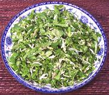

|
Pennywort SaladBurma - Myin Khwar Thoute | ||||
| Serves: Effort: Sched: DoAhead: |
4 salad ** 30 min Part |
A very popular salad in Burma and Malaysia, often served in Burmese restaurants worldwide. Similar salads are made in Sri Lanka and south India. I find it a very pleasant salad of interesting flavor and hardly more bitter than a salad of loose leaf lettuce. | |||
|
4 2 2 1 3 1 1/4 1/2 |
oz lrg oz sm oz T t t |
Pennywort leaf (1) Lettuce leaf (2) Shallots Thai Chili Coconut, fresh Lime Juice Salt Palm Sugar |
Make: - (30 min)
|